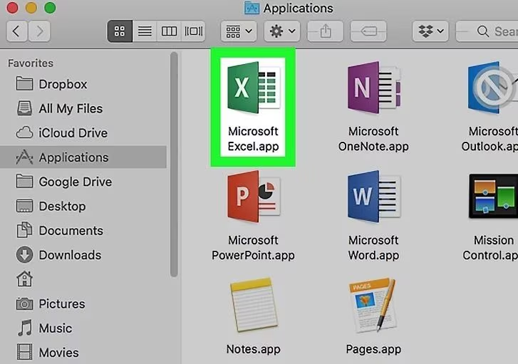
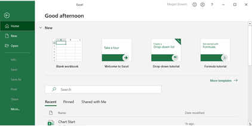
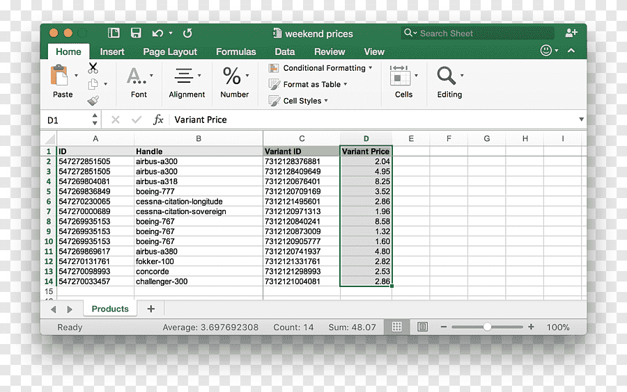
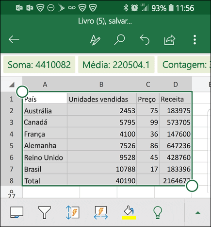
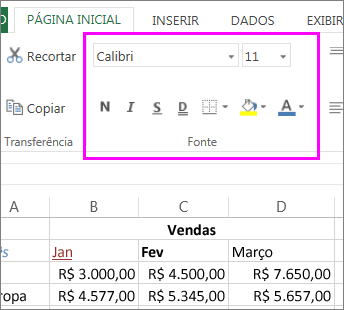
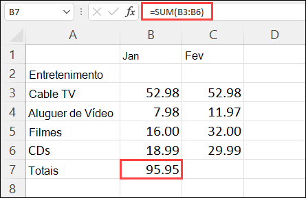
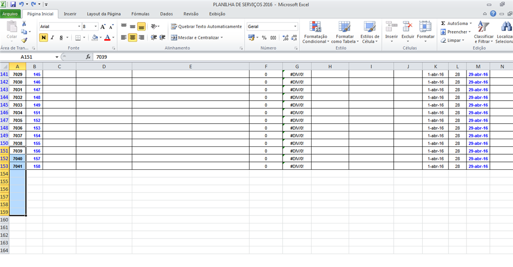
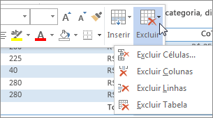
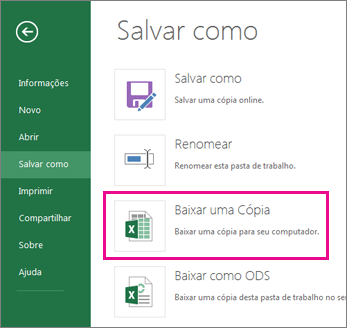
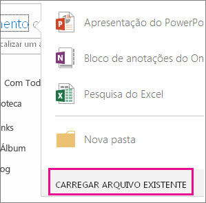

O Excel é um programa de planilha eletrônica produzido pela Microsoft, parte do pacote Microsoft Office. É essencial para organizar dados em formatos tabulares, realizar cálculos matemáticos complexos, analisar informações através de gráficos e tabelas dinâmicas, e automatizar tarefas via macros. Sua aplicação se estende por diversas áreas como contabilidade, finanças, engenharia, educação e mais, tornando-o uma ferramenta fundamental para profissionais que trabalham com grande volume de dados e análise de informações.
Inicie o programa clicando duas vezes no ícone do Microsoft Excel em seu desktop ou menu de programas.
Após abrir o Excel, você verá uma tela inicial com opções para criar um novo arquivo em branco ou selecionar um modelo. Clique em "Livro em branco" para começar.
Uma planilha do Excel é composta por células organizadas em linhas (numeradas) e colunas (letras). Use as setas do teclado ou o mouse para se deslocar pela planilha.
Clique na célula desejada e comece a digitar os dados. Você pode inserir números, texto, datas, fórmulas e muito mais.
Selecione as células que deseja formatar e use as opções na barra de ferramentas para alterar a fonte, o tamanho, a cor, o estilo, o alinhamento e outros atributos das células.
O Excel é conhecido por suas poderosas capacidades de cálculo. Para criar uma fórmula, digite o sinal de igual (=) seguido da expressão matemática ou função desejada. Por exemplo, "=A1+B1" soma os valores das células A1 e B1.
O Excel possui uma função de auto preenchimento que pode ser usada para copiar rapidamente dados ou padrões. Basta selecionar a célula com o conteúdo desejado e arrastar a alça de preenchimento (pequeno quadrado no canto inferior direito da célula) para as células desejadas.
Para inserir ou excluir linhas ou colunas, clique com o botão direito na linha ou coluna e selecione "Inserir" ou "Excluir". Isso é útil para reorganizar sua planilha conforme necessário.
Salve seu trabalho regularmente clicando em "Arquivo" na barra de ferramentas e depois em "Salvar". Escolha um local e nome para o arquivo e clique em "Salvar".
Se você precisar abrir um arquivo existente, clique em "Arquivo" e depois em "Abrir". Navegue até o local onde o arquivo está salvo, selecione-o e clique em "Abrir".
